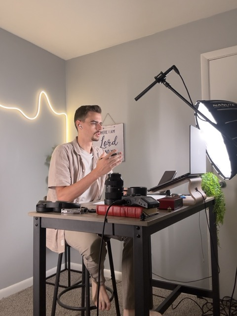

Back digital care for missionaries.
This is the vision page: what we’re building, why it matters, and how we’ll steward it. If God is leading you to help, start here.

Digital care is part of missionary care.
When communication breaks down, relationships drift and missionaries carry more weight alone. When it works, churches pray with names in mind, partners understand the work, and the missionary is less alone.
"We're not trying to get money from people. We're inviting God's people into God's work."
The tools exist. The trusted guide usually does not.
The friction isn't motivation. It's time, risk, and not knowing the next right step. In their own words:
What churches assume vs. what's real.
| Capability | Church assumes | Field reality |
|---|---|---|
| Equipment | MacBook Pro, office Wi-Fi | Aging laptop or just a phone, spotty data |
| Software | Full Adobe suite, paid tools | Canva free tier, CapCut mobile, out of pocket |
| People | A media or comms person | One missionary or family doing it all |
Three areas of care — what each one actually gives a missionary.
This is the what. How it's funded comes later, in the Invitation.
- Prayer-letter + video-update rhythms from a phone
- One home base supporters follow (partner: MissionaryConnect.app)
- Coaching on what to send, and how often
- Ready-to-run workflows + systems, not just lessons
- Built so a pastor hands it to a church member or spouse
- Built to be simple, repeatable, and safe for the field
- Native-speaking, culture-aware creatives
- Professional IT + technical AV
- Vetted and paid — only when you need it
The sponsor experience today: a guide, not an agency.
This is what the monthly sponsorship actually delivers to one missionary.
Intake / Assess
We look at their real setup and name the next right step.
Plan
A simple plan they can actually keep from the field.
Build / Deliver
Templates, tool guidance, and a communication rhythm.
Ongoing
Coaching as things change — they're never figuring it out alone.
A small, steady kind of care that compounds.
Separate from a missionary's financial support — this funds the digital side so they stay connected, stay safe online, and stop carrying tech decisions alone.
$65/mo = $780/year. For many churches, that's an easier “yes” than a one-time large gift — and it puts steady care beside one missionary.
Guide, translator, and connector.

I didn't have the equipment, the software, or the knowledge base.— Missionary, research interview
For the past five years, I've given my life to one thing — helping missionaries navigate the digital landscape. I've honed the skill set the mission field actually needs, and sacrificed to build this so missionaries don't have to figure it out alone.
- Five years dedicated to missionary digital care
- Interview-led — ministry leaders across 6 countries
- Builds the templates, workflows, and relationships — not just advice
The pattern is consistent: missionaries don't need convincing that digital tools matter. They need someone to help them take the next right step without adding more weight.
Join at the phase that moves the mission forward.
Pick one. I'll show exactly what it funds and how the money's handled. This is the how — the what lives up in the Three Areas.
Phase 1 · Available now · Monthly
Sponsor a Missionary
$65/mo
Put a trusted digital guide beside one missionary today. Sponsor today, and their digital care starts tomorrow.
+
- Intake + assessment of their setup
- A plan they can actually keep from the field
- Templates, tool guidance, communication rhythm
- Ongoing coaching as things change
Phase 2 · In development · One-time launch pledge
Kickstart the Online School
$70,000 goal
Help build the school so missionaries can hand the digital work off instead of carrying it.
+
- Curriculum design (pastor + pro tracks)
- Course production (video, systems, workflows)
- Translation into 5 major languages
- Platform / LMS build
- Testing with real missionaries
Phase 3 · In build · One-time launch pledge
Build the Trusted Help Network
$60,000 goal
Help stand up the vetted network missionaries call when a job's past tutorials.
+
- Platform build (profiles, matching, payments)
- Vetting system + initial specialist recruiting
- Trust & safety + onboarding
Founding Partner · All three phases
Shape the whole thing
Private call
Some partners want to shape the whole thing. That's a conversation, not a checkout.
+
- Scope across all three areas + the operating engine
- Scholarship capacity, long-term infrastructure
- Custom commitment, custom path
Givebutter — receipts provided (501(c)(3) status pending).
We’ll publish vetted public goals once assessed — then you can track progress with clear updates.
Regular updates on what your giving built.
The kinds of institutions this work needs.
Digital care doesn't scale through one founder. These are the categories of partner we're building toward — not commitments, not endorsements, but the table we're working to fill.
Preparing the next generation for a field that already runs on digital communication.
CategoryBoards responsible for missionary care who can integrate digital support.
CategoryTeams who steward the relationship and want missionaries equipped beyond the prayer letter.
CategoryProducts missionaries already use — where discounts and integrations close real gaps.
CategoryGiving committed to long-horizon Kingdom infrastructure.
CategoryPut steady care beside a missionary.
Pick an amount to begin. Monthly puts a digital guide beside one missionary; one-time backs a phase build.
Schedule a partner call.
If this fits your church, family, foundation, or organization, start with a conversation. We'll show you the need, the model, and the kickstart paths — then you decide whether God is inviting you to join this work.
Schedule a 30-minute partner call